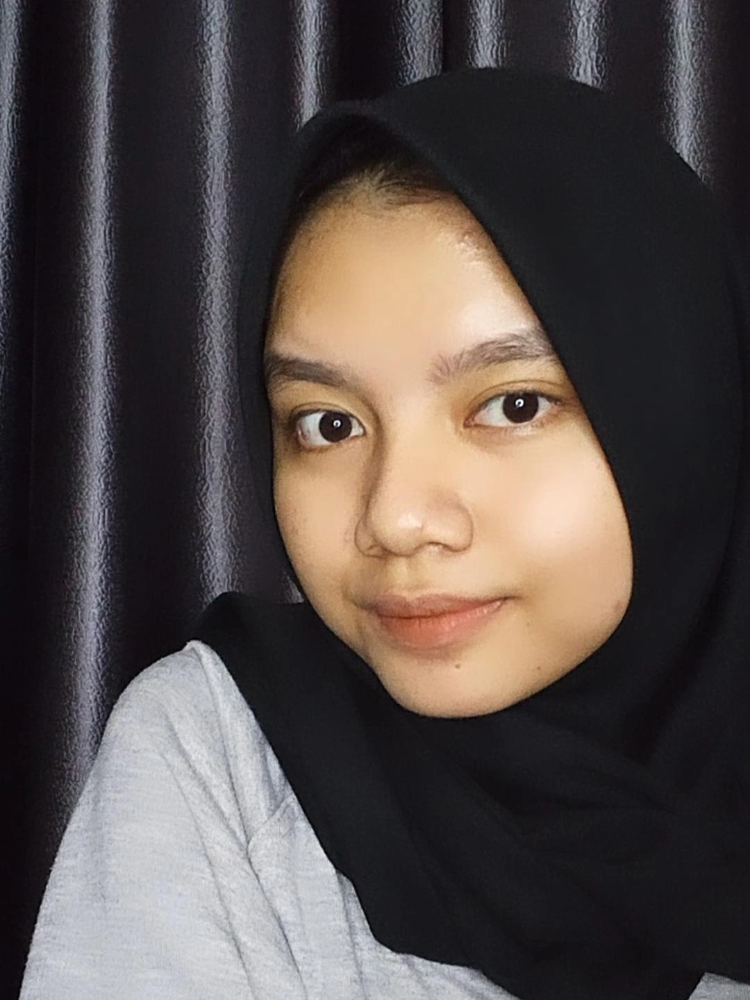

| Nama Lengkap | : | Alya Safira Jasmine Harahap |  |
| Tempat, Tanggal Lahir | : | Medan, 11 Agustus 2003 | |
| Alamat | : | Jln. Mapilindo No.16, Medan | : | alyasafira1108@gmail.com |
| MBTI | : | INFP |
| Pendidikan | Nama Sekolah | Jurusan |
|---|---|---|
| SMP | MTsN 2 Medan | MIPA |
| SMA | MAN 2 Model Medan | IPA |
| Kuliah | Telkom University | Sistem Informasi |
Alya Safira Jasmine Harahap, Mahasiswi jurusan Sistem Informasi Telkom University.
Memiliki tekad dan motivasi untuk terus belajar, melatih soft skill maupun hard skill, bertanggung jawab, berkomitmen, dan profesional.
Memiliki ketertarikan akan perkembangan teknologi, UI/UX Design, dan Bahasa Asing.
Skills